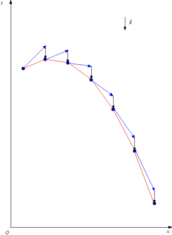
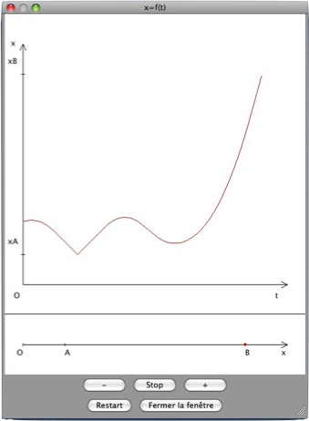
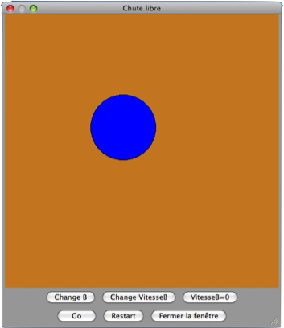

Physique du point

Dans cette partie sont posées les définitions fondamentales de la mécanique du point :


A partir du Théorème fondamental de la mécanique sont démontrées les trois lois de Newton, le théorème de composition des vitesses est énoncé, et l’on déduit finalement une procédure de construction des trajectoires de masses en chute libre par l’algorithme de Hook-Newton.
Cette partie est également l’occasion pour l’utilisateur de tester pour la première fois un module dans le slideshow. Ce dernier lui permet de tracer le graphique x=f(t) en contrôlant un mobile parcourant un axe.
Les commandes du module sont :


Le mobile doit partir du point A pour aller vers le point B : une fois arrivé, le mobile s’arrête, il est alors possible de recommencer une simulation. Si le mobile percute le point A, alors il subit un rebond élastique contre ce point, et se dirige ensuite vers B. Il est possible, en cliquant sur ”Stop” de modifier la vitesse du mobile à l’arrêt.
Un second module, en fin de chapitre, permet de vérifier la véracité de la construction de Hook-Newton vue quelques slides auparavant, en simulant la chute libre d’une boule soumise à la gravité.
Les commandes du module sont :


On peut, par ce module, constater que la masse d’un objet en chute libre n’a aucune incidence sur son mouvement (par exemple, en annulant la composante horizontale de la vitesse de la boule, et en observant la chute de masses différentes...).


